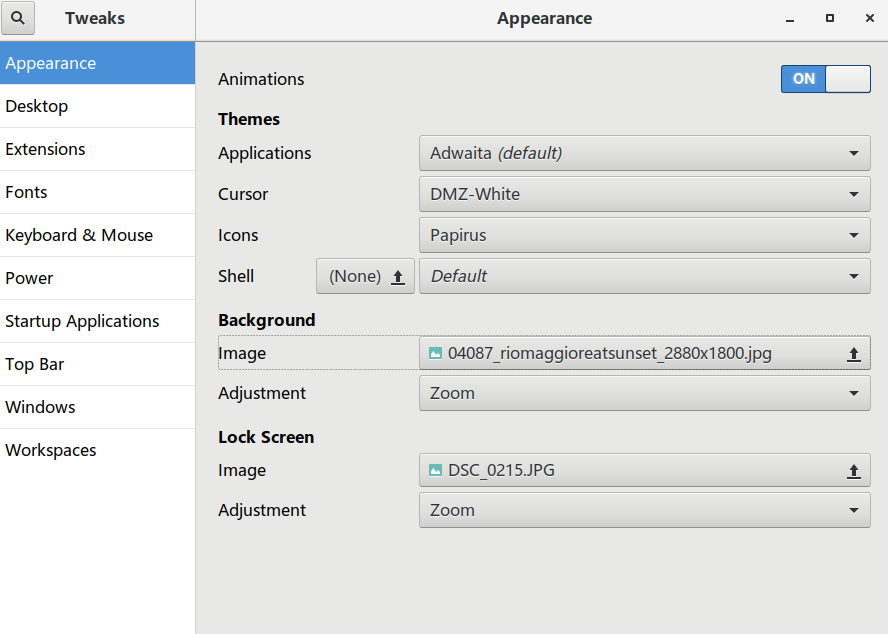
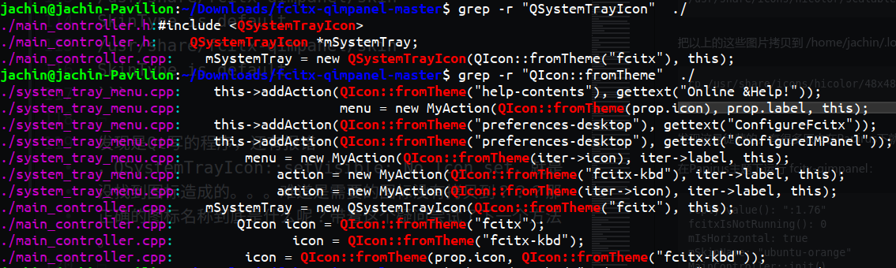
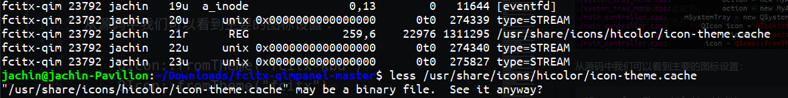
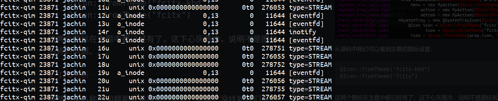
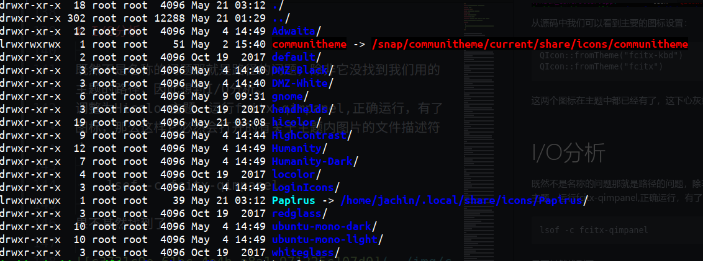

更换为Papirus后，输入法托盘图标怎么就是不显示，用的是fcitx-qimpanel。用默认Hicolor主题能正常显示，

尝试1：把Hicolor中的相关图标拷贝到Papirus未能解决问题
1
2
3
4
5
6
7
8
9
10
11
12
13
14
15
16
17
18
19
20
21
22
23
24
25
26
27
28
29
30
31
32
33
34
35
36
37
38
39
40
41
42
43
44
45
46
47
48
49
50
51
52
53
54
55
56
57
58
59
60
61
| /usr/share/icons/hicolor/128x128/apps/fcitx.png
/usr/share/icons/hicolor/16x16/apps/fcitx-fullwidth-active.png
/usr/share/icons/hicolor/16x16/apps/fcitx-fullwidth-inactive.png
/usr/share/icons/hicolor/16x16/apps/fcitx-kbd.png
/usr/share/icons/hicolor/16x16/apps/fcitx-punc-active.png
/usr/share/icons/hicolor/16x16/apps/fcitx-punc-inactive.png
/usr/share/icons/hicolor/16x16/apps/fcitx-vk-active.png
/usr/share/icons/hicolor/16x16/apps/fcitx-vk-inactive.png
/usr/share/icons/hicolor/16x16/apps/fcitx.png
/usr/share/icons/hicolor/22x22/apps/fcitx-fullwidth-active.png
/usr/share/icons/hicolor/22x22/apps/fcitx-fullwidth-inactive.png
/usr/share/icons/hicolor/22x22/apps/fcitx-kbd.png
/usr/share/icons/hicolor/22x22/apps/fcitx-punc-active.png
/usr/share/icons/hicolor/22x22/apps/fcitx-punc-inactive.png
/usr/share/icons/hicolor/22x22/apps/fcitx-vk-active.png
/usr/share/icons/hicolor/22x22/apps/fcitx-vk-inactive.png
/usr/share/icons/hicolor/22x22/apps/fcitx.png
/usr/share/icons/hicolor/24x24/apps/fcitx-fullwidth-active.png
/usr/share/icons/hicolor/24x24/apps/fcitx-fullwidth-inactive.png
/usr/share/icons/hicolor/24x24/apps/fcitx-kbd.png
/usr/share/icons/hicolor/24x24/apps/fcitx-punc-active.png
/usr/share/icons/hicolor/24x24/apps/fcitx-punc-inactive.png
/usr/share/icons/hicolor/24x24/apps/fcitx-vk-active.png
/usr/share/icons/hicolor/24x24/apps/fcitx-vk-inactive.png
/usr/share/icons/hicolor/24x24/apps/fcitx.png
/usr/share/icons/hicolor/32x32/apps/fcitx.png
/usr/share/icons/hicolor/48x48/apps/fcitx-cangjie.png
/usr/share/icons/hicolor/48x48/apps/fcitx-chn.png
/usr/share/icons/hicolor/48x48/apps/fcitx-chttrans-active.png
/usr/share/icons/hicolor/48x48/apps/fcitx-chttrans-inactive.png
/usr/share/icons/hicolor/48x48/apps/fcitx-erbi.png
/usr/share/icons/hicolor/48x48/apps/fcitx-fullwidth-active.png
/usr/share/icons/hicolor/48x48/apps/fcitx-fullwidth-inactive.png
/usr/share/icons/hicolor/48x48/apps/fcitx-kbd.png
/usr/share/icons/hicolor/48x48/apps/fcitx-pinyin.png
/usr/share/icons/hicolor/48x48/apps/fcitx-punc-active.png
/usr/share/icons/hicolor/48x48/apps/fcitx-punc-inactive.png
/usr/share/icons/hicolor/48x48/apps/fcitx-remind-active.png
/usr/share/icons/hicolor/48x48/apps/fcitx-remind-inactive.png
/usr/share/icons/hicolor/48x48/apps/fcitx-shuangpin.png
/usr/share/icons/hicolor/48x48/apps/fcitx-vk-active.png
/usr/share/icons/hicolor/48x48/apps/fcitx-vk-inactive.png
/usr/share/icons/hicolor/48x48/apps/fcitx-wbpy.png
/usr/share/icons/hicolor/48x48/apps/fcitx-wubi.png
/usr/share/icons/hicolor/48x48/apps/fcitx-ziranma.png
/usr/share/icons/hicolor/48x48/apps/fcitx.png
/usr/share/icons/hicolor/scalable/apps/fcitx-fullwidth-active-symbolic.svg
/usr/share/icons/hicolor/scalable/apps/fcitx-fullwidth-active.svg
/usr/share/icons/hicolor/scalable/apps/fcitx-fullwidth-inactive-symbolic.svg
/usr/share/icons/hicolor/scalable/apps/fcitx-fullwidth-inactive.svg
/usr/share/icons/hicolor/scalable/apps/fcitx-kbd-symbolic.svg
/usr/share/icons/hicolor/scalable/apps/fcitx-kbd.svg
/usr/share/icons/hicolor/scalable/apps/fcitx-punc-active-symbolic.svg
/usr/share/icons/hicolor/scalable/apps/fcitx-punc-active.svg
/usr/share/icons/hicolor/scalable/apps/fcitx-punc-inactive-symbolic.svg
/usr/share/icons/hicolor/scalable/apps/fcitx-punc-inactive.svg
/usr/share/icons/hicolor/scalable/apps/fcitx-vk-active-symbolic.svg
/usr/share/icons/hicolor/scalable/apps/fcitx-vk-active.svg
/usr/share/icons/hicolor/scalable/apps/fcitx-vk-inactive-symbolic.svg
/usr/share/icons/hicolor/scalable/apps/fcitx-vk-inactive.svg
/usr/share/icons/hicolor/scalable/apps/fcitx.svg
|
把以上的这些图片拷贝到 /home/jachin/.local/share/icons/Papirus/*下对应的目录
cp /usr/share/icons/hicolor/48x48/apps/fcitx-kbd.png /home/jachin/.local/share/icons/Papirus/48x48/apps/fcitx-kbd.png
发现这是徒劳的，有很多原本在Papirus下就是有的。拷贝完没有一点的好转。。。
在Papirus主题下运行 fcitx-qimpanel：
1
2
3
4
5
6
7
8
9
10
| reply.value(): ":1.76"
fcitxIsNotRunning(): 0
mIsHorizontal: true
mSkinName: "ubuntu-orange"
MainController::init()
/usr/share/fcitx-qimpanel/skin
SkinType is default
QSystemTrayIcon::setVisible: No Icon set
/usr/share/fcitx-qimpanel/skin
SkinType is default
|
在Hicolor主题下运行 fcitx-qimpanel：
1
2
3
4
5
6
7
8
9
| reply.value(): ":1.76"
fcitxIsNotRunning(): 0
mIsHorizontal: true
mSkinName: "ubuntu-orange"
MainController::init()
/usr/share/fcitx-qimpanel/skin
SkinType is default
/usr/share/fcitx-qimpanel/skin
SkinType is default
|
发现是Qt写的程序，还有报错，QSystemTrayIcon::setVisible: No Icon set，就是没找到图标造成的。。。难道是需要的图标没有拷贝到？？？那正确的图标名称到底是什么呢？带着这个疑问尝试了下一个方法。
尝试2：分析源码
无奈想到去看看源码，fcitx-qimpanel是Qt写的，代码是开源
地址：https://github.com/lenky0401/fcitx-qimpanel/
git clone https://github.com/lenky0401/fcitx-qimpanel.git
cd fcitx-qimpanel
grep -r “QSystemTrayIcon” ./

从源码中我们可以看到主要的图标设置：
QIcon::fromTheme("fcitx-kbd")
QIcon::fromTheme("fcitx")
这两个图标在主题中都已经有了，这下心灰意冷，说明不是图标名称的问题。。。
尝试3：I/O分析
既然不是名称的问题那就是路径的问题，除非它没找到我们用的主题的路径，因此想到I/O分析。
调整为Hicolor主题，运行fcitx-qimpanel,正确运行，有了图标，那么这样它必然会打开的有关于主题内图片的文件描述符：
lsof -c fcitx-qimpanel
果不其然找到了：

/usr/share/icons/hicolor/icon-theme.cache系统在更换主题时建立了一个缓存cache（相当于索引，提高速度），然后文件都从chache中找需要的图标。既然这样那就换会Papirus看看：

一下子感觉找到了病根，怎的是没找到路径。。。至于为什么会这样可能是Qt的bug或则gnome的bug。知道了原因解决起来就容易了：
sudo ln -s ~/.local/share/icons/Papirus /usr/share/icons/Papirus

重启fcitx-qimpanel问题解决！！！
每天进步一点点!!!!
impossible is I’m possible!!!